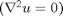
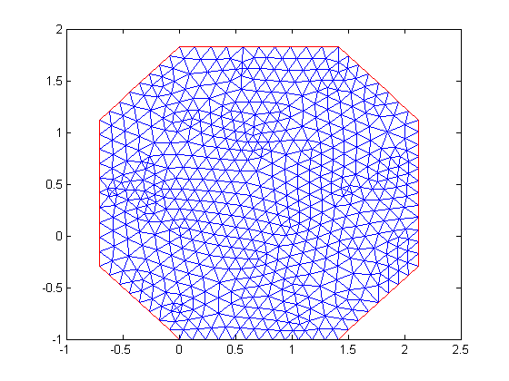
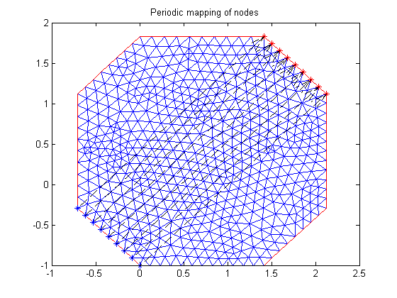
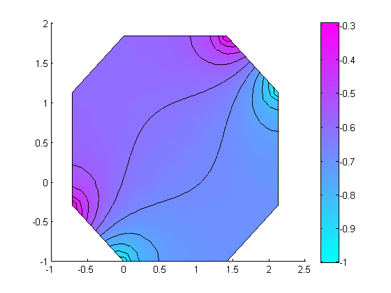
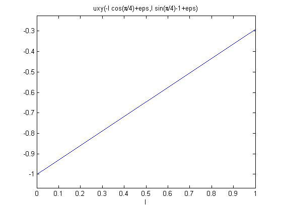
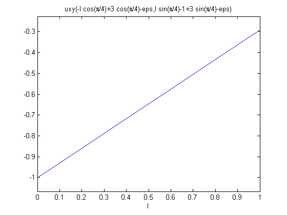

Contents
Solve Laplace's equation with periodic boundary conditions on octagon shaped geometry
Introduction
Laplace's equation  is solved on an octagon. Sides 8 and 4 are constrained with periodic BCs. Further Side 8 has a varying BC.
function examplePeriodicBC
import pdetbplus.*; % import package for accessing the geometryObject, boundaryConditionObject and coeffsObject classes
Geometry
% Points of the octagon p{1} = pointObject(0,0); p{2} = pointObject(1,1); p{3} = pointObject(2,1); p{4} = pointObject(3,0); p{5} = pointObject(3,-1); p{6} = pointObject(2,-2); p{7} = pointObject(1,-2); p{8} = pointObject(0,-1); % Create polygon with inside region called 'tissue' and outside region called 'cavity'. 'cavity' is % not meshed. g = geometryObject.createPolygon('name','Octo','points',p,'leftRegion','cavity','rightRegion','tissue',... 'leftRegionIsExterior',true); g.exteriorRegion = 'cavity'; % Rotate geomety around (0,-1) anti-clockwise by 45 degrees g = g.rotate(pointObject(0,-1),pi/4); % Mesh g = g.initMesh('showMesh',true,'numRefineMeshSteps',1); % Set dimension of the problem to 1 N = 1;
Boundary Conditions
% Instantiate boundary condition object bc = boundaryConditionObject(g,N); % Add varying BC to boundary{8} function [hval,rval,qval,gval] = varyWithY(x,y,u,t) qval = []; gval = []; hval = 1; rval = y; end bc.add('name',g.boundary{8}.name,'xyutFunction',@varyWithY); % Get global matrices corresponding to BC's defined so far [Q,G,H,R] = bc.getMatrices(); % Get contribution to global H,R matrices for periodicity condition between a pair of opposite boundaries hold on; % for plotting periodic mapping of nodes [Hadd,Radd] = bc.getGlobalHR('name',g.boundary{8}.name,'dimension',1,'type','periodic',... 'periodicX','x+3*cos(pi/4)','periodicY','y+3*sin(pi/4)','showNodes',true); title 'Periodic mapping of nodes'; snapnow; % Combine the additional H,R matrices H = [H;Hadd]; R = [R;Radd];
Coefficient
coeffs = coeffsObject(g,N); % Define Laplace's equation coeffs.add('region','tissue','cConstantValue',1,'fConstantValue',0); % Extract matrices [K,M,F] = coeffs.getMatrices();
Solve
% Solve using matrix form of assempde
u = assempde(K,M,F,Q,G,H,R);
Plot
% Plot contour of solution clf; pdeplot(g.mesh.p,g.mesh.e,g.mesh.t,'xydata',u,'contour','on','mesh','off'); snapnow; % Verify plots of solution on the periodic boundary pair are the same uxy = g.createXYFunctionFromNodalSolution(u); % Create plot on left boundary; eps is added/subtracted to make sure plot is inside region u_left = @(l) uxy(-l*cos(pi/4)+eps, l*sin(pi/4)-1+eps); ezplot(u_left,[0,1]); snapnow; % Create plot on periodic boundary; eps is added/subtracted to make sure plot is inside region u_periodic = @(l) uxy(-l*cos(pi/4)+3*cos(pi/4)-eps, l*sin(pi/4)-1+3*sin(pi/4)-eps); ezplot(u_periodic,[0,1]); snapnow;  
Documentation of classes
See help for geometryObject pointObject coeffsObject boundaryConditionObject meshObject
More info and other examples
end